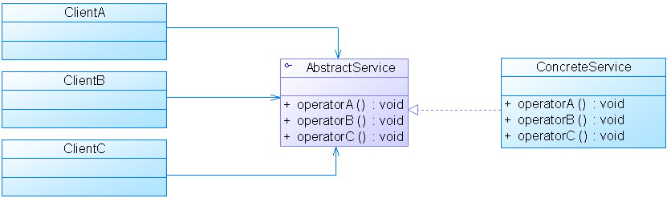
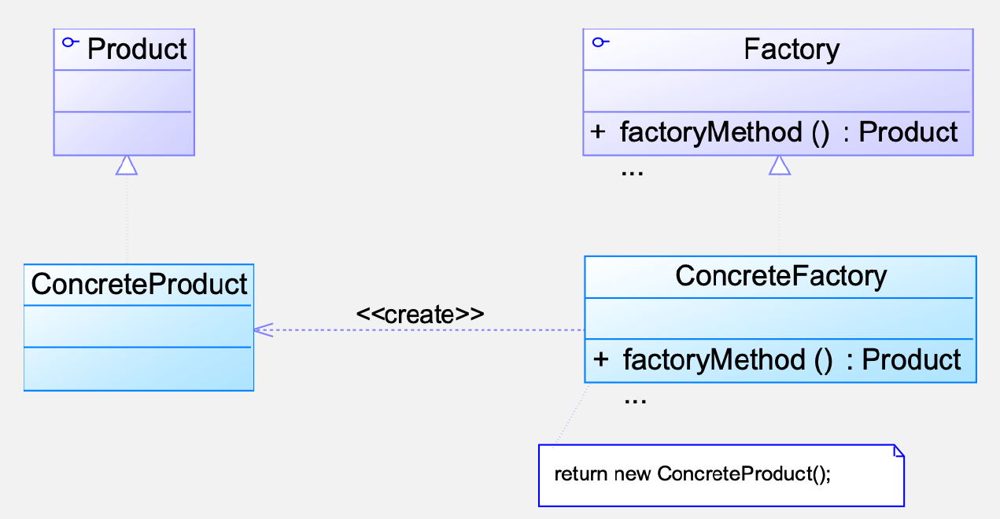
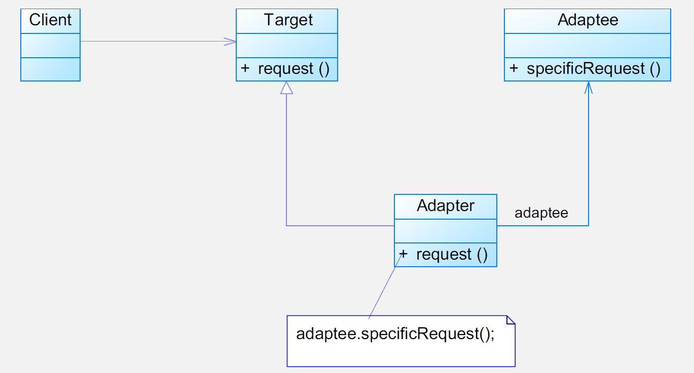

软件系统设计(设计模式部分)
软件系统设计整理(设计模式部分)
要知道每个原则和设计模式的英文，因为考试是纯英文。。
1. 面向对象设计原则
设计原则是最重要的部分，要理解本身概念和应用
概述
- 软件设计
- 需求定义了系统需要满足的目标
- 规约定义了系统的外部可观察到的行为
- 架构定义了系统一级的主要组成部分、各部分的交互方法、使用的技术
- 设计定义了如何完成任务、需要写的代码
- 面向对象软件设计
- 将实现的约束条件应用到面向对象分析所产生的概念模型的过程
- 用方法和属性来描述用于构成系统的类
- 添加不明显属于领域的类，比如抽象类和接口
- 描述类是如何构成组件的
- 如何发现合适的对象
- OOD的难点在于将一个系统分解成对象
- 许多对象直接来自于分析模型或实现空间（数据库、文件、用户界面、IPC…）
- 同样，还有其他一些类没有这样的对应类，用来使可能过于特殊的设计变得更为通用，例如策略模式类
- 软件的可维护性和可复用性
- 一个可维护性(Maintainability) 较低的软件设计，通常由于如下4个原因造成：过于僵硬、过于脆弱、复用率低、黏度过高
- 一个好的系统设计应该具备如下三个性质：可扩展性、灵活性、可插入性
- 软件的复用(Reuse)或重用拥有众多优点，如可以提高软件的开发效率，提高软件质量，节约开发成本，恰当的复用还可以改善系统的可维护性
- 面向对象设计复用的目标在于实现支持可维护性的复用，在面向对象的设计里面，可维护性复用都是以面向对象设计原则为基础的
- 重构(Refactoring)是在不改变软件现有功能的基础上，通过调整程序代码改善软件的质量、性能，使其程序的设计模式和架构更趋合理，提高软件的扩展性和维护性
面向对象设计原则
要知道原则的英文
面向对象设计原则简介
- 常用的面向对象设计原则包括7个，这些原则并不是孤立存在的，它们相互依赖，相互补充
- 目的：支持可维护的复用
- 目标：开闭原则
- 指导：最小知识原则
- 基础：单一职责原则、可变性封装原则
- 实现：依赖倒置原则、合成复用原则、里氏代换原则、接口隔离原则
单一职责原则 SRP
- 定义：一个对象应该只包含单一的职责，并且该职责被完整地封装在一个类中
- 另一个定义：就一个类而言，应该仅有一个引起它变化的原因
- 分析
- 一个类（或者大到模块，小到方法）承担的职责越多，它被复用的可能性越小
- 类的职责主要包括两个方面：数据职责和行为职责，数据职责通过其属性来体现，而行为职责通过其方法来体现
- 单一职责原则是实现高内聚、低耦合的指导方针
- 例子
- 某基于Java的C/S系统的“登录功能”通过如下登录类(Login)实现
- 现使用单一职责原则对其进行重构，把接受请求、访问数据分开
开闭原则 OCP
- 定义：一个软件实体应当对扩展开放，对修改关闭。也就是说在设计一个模块的时候，应当使这个模块可以在不被修改的前提下被扩展，即实现在不修改源代码的情况下改变这个模块的行为。
- 抽象化是开闭原则的关键
- 例子：
- 某图形界面系统提供了各种不同形状的按钮，客户端代码可针对这些按钮进行编程，用户可能会改变需求要求使用不同的按钮
- 其实就是让原来依赖实现类的类去依赖抽象类
里氏代换(替换)原则 LSP
- 定义：所有引用基类（父类）的地方必须能透明地使用其子类的对象
- 里氏代换原则可以通俗表述为：在软件中如果能够使用基类对象，那么一定能够使用其子类对象
- 里氏代换原则是实现开闭原则的重要方式之一
- 在程序中尽量使用基类类型来对对象进行定义，在运行时再确定其子类类型，用子类对象来替换父类对象
- 例子
- 某系统需要实现对重要数据（如用户密码）的加密处理，在数据操作类(DataOperator)中需要调用加密类中定义的加密算法，系统提供了两个不同的加密类，CipherA和CipherB
依赖倒转(置)原则 DIP
- 定义：高层模块不应该依赖低层模块，它们都应该依赖抽象。抽象不应该依赖于细节，细节应该依赖于抽象
- 另一个定义：要针对接口编程，不要针对实现编程
- 如果说开闭原则是面向对象设计的目标的话，那么依赖倒转原则就是面向对象设计的主要手段
- 依赖倒转原则的常用实现方式之一是在代码中使用抽象类，而将具体类放在配置文件中
- 类之间的耦合：零耦合、具体耦合、抽象耦合
- 依赖倒转原则要求客户端依赖于抽象耦合，以抽象方式耦合是依赖倒转原则的关键
- 例子
- 某系统提供一个数据转换模块，可以将来自不同数据源的数据转换成多种格式
- 为什么里式替换原则和依赖倒置原则要结合起来？
- 单独使用的局限性：如果只满足LSP，而依赖于具体的子类或父类实现，系统的耦合度还是偏高，扩展性不足。如果只满足DIP高层依赖的抽象不能保证子类能够替换父类，可能会导致逻辑错误或行为异常。
- 结合使用的好处：
- 可靠性：DIP要求依赖抽象，但抽象的稳定性和正确性很重要。LSP确保不同实现（子类）都能替换抽象，不会破坏原有功能，让依赖倒置变得安全可靠。
- 解耦与复用：只要抽象层遵循LSP，实际开发中高层模块只需依赖接口（DIP），而不会关心具体实现。
- 降低维护成本：新需求或子类增加时，只要遵守LSP，高层模块无须修改。DIP让系统更灵活、适应变化，而LSP保证变化不会潜移默化破坏功能稳定性。
接口隔离原则 ISP
- 定义：客户端不应该依赖那些它不需要的接口
- 另一个定义：一旦一个接口太大，则需要将它分割成一些更细小的接口，使用该接口的客户端仅需知道与之相关的方法即可
- 接口隔离原则是指使用多个专门的接口，而不使用单一的总接口
- 使用接口隔离原则拆分接口时，首先必须满足单一职责原则
- 可以在进行系统设计时采用定制服务的方式，即为不同的客户端提供宽窄不同的接口
- 例子
- 下图展示了一个拥有多个客户类的系统，在系统中定义了一个巨大的接口（胖接口）AbstractService来服务所有的客户类。可以使用接口隔离原则对其进行重构
- 
合成复用原则 CRP
- 定义：尽量使用对象组合，而不是继承来达到复用的目的。HAS-A can be better than IS-A
- 合成复用原则就是指在一个新的对象里通过关联关系（包括组合关系和聚合关系）来使用一些已有的对象，使之成为新对象的一部分；新对象通过委派调用已有对象的方法达到复用其已有功能的目的。简言之：要尽量使用组合/聚合关系，少用继承。
- 在面向对象设计中，可以通过两种基本方法在不同的环境中复用已有的设计和实现，即通过组合/聚合关系或通过继承
- 继承复用：实现简单，易于扩展。破坏系统的封装性；从基类继承而来的实现是静态的，不可能在运行时发生改变，没有足够的灵活性；只能在有限的环境中使用。（“白箱”复用）
- 组合/聚合复用：耦合度相对较低，选择性地调用成员对象的操作；可以在运行时动态进行。（“黑箱”复用）
- 组合/聚合可以使系统更加灵活，类与类之间的耦合度降低，一个类的变化对其他类造成的影响相对较少，因此一般首选使用组合/聚合来实现复用
- 例子
- 某教学管理系统部分数据库访问类设计如图所示，如果需要更换数据库连接方式，如原来采用JDBC连接数据库，现在采用数据库连接池连接，则需要修改DBUtil类源代码。如果StudentDAO采用JDBC连接，但是TeacherDAO采用连接池连接，则需要增加一个新的DBUtil类，并修改StudentDAO或TeacherDAO的源代码，使之继承新的数据库连接类，这将违背开闭原则，系统扩展性较差
迪米特法则/最少知识原则 LoD
- 定义：不要和“陌生人”说话，只与你的直接朋友通信。每一个软件单位对其他的单位都只有最少的知识，而且局限于那些与本单位密切相关的软件单位
- 迪米特法则就是指一个软件实体应当尽可能少的与其他实体发生相互作用，这样当一个模块修改时，就会尽量少的影响其他的模块
- 迪米特法则中，对于一个对象，其朋友包括以下几类：
- 当前对象本身(this)
- 以参数形式传入到当前对象方法中的对象
- 当前对象的成员对象
- 如果当前对象的成员对象是一个集合，那么集合中的元素也都是朋友
- 当前对象所创建的对象
- 迪米特法则可分为狭义法则和广义法则。在狭义的迪米特法则中，如果两个类之间不必彼此直接通信，那么这两个类就不应当发生直接的相互作用，如果其中的一个类需要调用另一个类的某一个方法的话，可以通过第三者转发这个调用。狭义法则可以降低类之间的耦合，但是不同模块之间的通信效率低。广义的迪米特法则：指对对象之间的信息流量、流向以及信息的影响的控制，主要是对信息隐藏的控制
- 迪米特法则的主要用途在于控制信息的过载：尽量创建松耦合的类；尽量降低成员变量和成员函数的访问权限；只要有可能，一个类型应当设计成不变类；一个对象对其他对象的引用应当降到最低
- 例子
- 某系统界面类(如Form1、Form2等类)与数据访问类(如DAO1、DAO2等类)之间的调用关系较为复杂
2. 策略模式
设计模式
软件模式
- 软件模式是将模式的一般概念应用于软件开发领域，即软件开发的总体指导思路或参照样板。软件模式包括设计模式、架构模式、分析模式、过程模式。在软件生命周期的每个阶段都存在一些模式。
- 软件模式的基本结构 (四要素)：问题描述、前提条件（环境或约束条件）、解法和效果
- 软件模式在发现过程中需要遵循大三律(Rule Of Three)，即只有经过三个以上不同类型的系统的校验，一个解决方案才能从候选模式升格成模式
设计模式的概念
- 设计模式（Design Pattern）是一套被反复使用、多数人知晓的、经过分类编目的、代码设计经验的总结，使用设计模式是为了可重用代码、让代码更容易被他人理解、保证代码可靠性
设计模式的作用
- 设计模式为您提供了与其他开发人员共享的词汇表。当您使用模式与其他开发人员或团队进行沟通时，您不仅在沟通模式名称，还传达了模式所代表的整套质量属性，特征和约束，为开发团队提供强大的动力
- 通过让您在模式级别(而不是实质性对象级别)进行思考，还可以提高您对体系结构的思考
设计模式的基本要素
- 包括模式名称、问题、目的、解决方案、效果、实例代码、相关设计模式
- 关键元素（四要素）：模式名称、问题、解决方案、效果
设计模式分类
- 分类一：目的
- 创建型模式（Creational）：主要用于创建对象；例如：工厂方法模式、抽象工厂模式
- 结构型模式（Structural）：主要用于处理类或对象的组合；例如：适配器模式、组合模式、外观模式、装饰模式
- 行为性模式（Behavioral）：主要用于描述对类或对象怎样交互和怎样分配职责，例如：模板方法模式、命令模式、中介者模式、观察者模式
- 分类二：范围
- 类模式：处理类和子类之间的关系，这些关系通过继承建立，在编译时刻就被确定下来，是属于静态的；例如：工厂方法模式、（类）适配器模式、模板方法模式。
- 对象模式：处理对象间的关系，这些关系在运行时刻变化，更具动态性；例如：抽象工厂模式、（对象）适配器模式、命令模式、中介者模式、观察者模式。
范围/目的 创建型模式 结构型模式 行为型模式 类模式 工厂方法模式 (类)适配器模式 模板方法模式 对象模式 抽象工厂模式、建造者模式、原型模式、单例模式 (对象)适配器模式、桥接模式、组合模式、装饰模式、外观模式、享元模式、代理模式 命令模式、迭代器模式、中介者模式、观察者模式、状态模式、策略模式 - 分类一：目的
如何使用设计模式
- 依赖库和框架：提供了全部和必要的功能，一般可以直接直接复用
- 设计模式帮助我们构建自己的应用程序，以使其更具可维护性和灵活性
- 设计模式首先进入你的大脑
- 尽量避免过度使用的问题
策略模式
- 概述
- 策略模式定义了一系列算法，将每个算法封装在一起，并使它们可替换，策略使算法独立于使用该算法的客户端而变化
- 目的：定义一系列算法，封装每个算法，并使它们可替换。策略使算法可以独立于使用该算法的客户端而变化。
- 名称：策略模式 Strategy Pattern，也可以是Policy Pattern
- 应用场景
- 许多相关的类仅在行为上有所不同，策略提供了一种使用多种行为之一配置类的方法
- 您需要算法的不同变体。例如，您可能定义了反映不同空间/时间权衡的算法。将这些变体实现为算法的类层次结构时，可以使用策略。
- 一种算法使用客户端不应该知道的数据。使用策略模式可避免暴露复杂的、特定于算法的数据结构
- 一个类定义了许多行为，这些行为在其操作中显示为多个条件语句。代替许多条件，将相关的条件分支移到他们自己的策略类中。
- 策略模式结构

- 使用策略的上下文、抽象策略接口、具体策略类
- 策略模式的作用
- 定义了相关算法家族。策略类的层次结构定义了一系列算法或行为，以供上下文重用。
- 子类化的替代方法
- 消除条件语句
- 多种实现方式。策略可以提供相同行为的不同实现。客户可以选择具有不同时间和空间权衡的策略
- 策略模式的缺点
- 客户必须意识到不同的策略。这种模式有一个潜在的缺点，即客户在选择合适的策略之前必须先了解策略的不同，不然客户可能会遇到实现问题。
- 策略和上下文之间的通信开销
- 对象数量增加
- 使用设计模式一般都会有的缺点：
- 增加设计的复杂度和增加类的个数(增加辅助类)
- 增加隔阂、方法调用，降低软件运行的效率，但是这已经不是目前主要的问题了
3. 工厂模式
简单工厂模式
- 概述
- 动机：考虑一个简单的软件应用场景，一个软件系统可以提供多个外观不同的按钮(如圆形按钮、矩形按钮、菱形按钮等)，这些按钮都源自同一个基类，不过在继承基类后不同的子类修改了部分属性从而使得它们可以呈现不同的外观，如果我们希望在使用这些按钮时，不需要知道这些具体按钮类的名字，只需要知道表示该按钮类的一个参数，并提供一个调用方便的方法，把该参数传入方法即可返回一个相应的按钮对象，此时，就可以使用简单工厂模式。（
人话：当系统有多个相似用途的类，而创建并使用它们时只需要传入几个参数，不需要复杂的设置操作，就可以用工厂模式）
- 动机：考虑一个简单的软件应用场景，一个软件系统可以提供多个外观不同的按钮(如圆形按钮、矩形按钮、菱形按钮等)，这些按钮都源自同一个基类，不过在继承基类后不同的子类修改了部分属性从而使得它们可以呈现不同的外观，如果我们希望在使用这些按钮时，不需要知道这些具体按钮类的名字，只需要知道表示该按钮类的一个参数，并提供一个调用方便的方法，把该参数传入方法即可返回一个相应的按钮对象，此时，就可以使用简单工厂模式。（
- 模式定义
- 简单工厂模式(Simple Factory Pattern)：又称为静态工厂方法(Static Factory Method)模式，它属于类创建型模式
- 简单工厂模式专门定义一个类来负责创建其他类的实例，被创建的实例通常都具有共同的父类
- 工厂角色提供静态工厂方法来创建其他类的实例，这样子满足了原则：
- 单一职责原则(封装变化)将对象的创建和使用分离(创建本质上和使用强耦合)，将复杂度降低，并将变化的部分和不变的部分分离开。
- 但是对开闭原则的支持不太好
- 模式角色
- Factory：工厂角色
- Product：抽象产品角色
- ConcreteProduct：具体产品角色
- 模式分析
- 将对象的创建和对象本身业务处理分离可以降低系统的耦合度，使得两者修改起来都相对容易
- 在调用工厂类的工厂方法时，由于工厂方法是静态方法，可通过类名直接调用，只需要传入一个简单的参数即可，在实际开发中，还可以在调用时将所传入的参数保存在XML等格式的配置文件中，修改参数时无须修改任何Java源代码
- 简单工厂模式最大的问题在于工厂类的职责相对过重，增加新的产品需要修改工厂类的判断逻辑，这一点与开闭原则是相违背的
- 简单工厂模式的要点在于：当你需要什么，只需要传入一个正确的参数，就可以获取你所需要的对象，而无须知道其创建细节
- 简单工厂模式优点
- 工厂类可以决定在什么时候创建哪一个产品类的实例，客户端可以免除直接创建产品对象的责任，这种做法实现了对责任的分割，它提供了专门的工厂类用于创建对象
- 客户端无须知道所创建的具体产品类的类名，只需要知道具体产品类所对应的参数即可
- 通过引入配置文件，可以在不修改任何客户端代码的情况下更换和增加新的具体产品类
- 简单工厂模式缺点
- 由于工厂类集中了所有产品创建逻辑，一旦不能正常工作，整个系统都要受到影响
- 增加系统中类的个数，在一定程序上增加了系统的复杂度和理解难度
- 系统扩展困难，一旦添加新产品就不得不修改工厂逻辑，在产品类型较多时，有可能造成工厂逻辑过于复杂，不利于系统的扩展和维护
- 简单工厂模式由于使用了静态工厂方法，造成工厂角色无法形成基于继承的等级结构
- 适用场景
- 工厂类负责创建的对象比较少：由于创建的对象较少，不会造成工厂方法中的业务逻辑太过复杂
- 客户端只知道传入工厂类的参数，对于如何创建对象不关心：客户端既不需要关心创建细节，甚至连类名都不需要记住，只需要知道类型所对应的参数
工厂方法模式
- 概念
- 在简单工厂模式中，所有的产品都是由同一个工厂创建，工厂类职责较重，业务逻辑较为复杂，具体产品与工厂类之间的耦合度高，严重影响了系统的灵活性和扩展性，而工厂方法模式则可以很好地解决这一问题
- 模式定义
- 工厂方法模式(Factory Method Pattern)又称为工厂模式，也叫虚拟构造器(Virtual Constructor)模式或者多态工厂(Polymorphic Factory)模式，它属于类创建型模式
- 在工厂方法模式中，工厂父类负责定义创建产品对象的公共接口，而工厂子类则负责生成具体的产品对象，这样做的目的是将产品类的实例化操作延迟到工厂子类中完成，即通过工厂子类来确定究竟应该实例化哪一个具体产品类
- 工厂方法是以继承方法为主，工厂子类是继承工厂父类的
- 模式结构
- 
- 模式分析
- 工厂方法模式保持了简单工厂模式的优点，而且克服了它的缺点。在工厂方法模式中，核心的工厂类不再负责所有产品的创建，而是将具体创建工作交给子类去做。这使得工厂方法模式可以允许系统在不修改工厂角色的情况下引进新产品
- 当系统扩展需要添加新的产品对象时，仅仅需要添加一个具体产品对象以及一个具体工厂对象，很好地符合了”开闭原则”。工厂方法模式退化(抽象工厂和具体工厂合并)后可以演变成简单工厂模式。
- 为了提高系统的可扩展性和灵活性，在定义工厂和产品时都必须使用抽象层
- 模式优点
- 用户只需要关心所需产品对应的工厂，无须关心创建细节，甚至无须知道具体产品类的类名。
- 基于工厂角色和产品角色的多态性设计是工厂方法模式的关键。它能够使工厂可以自主确定创建何种产品对象，而如何创建这个对象的细节则完全封装在具体工厂内部。工厂方法模式之所以又被称为多态工厂模式，是因为所有的具体工厂类都具有同一抽象父类。
- 使用工厂方法模式的另一个优点是在系统中加入新产品时，无须修改抽象工厂和抽象产品提供的接口，无须修改客户端，也无须修改其他的具体工厂和具体产品，而只要添加一个具体工厂和具体产品就可以了。
- 模式缺点
- 在添加新产品时，需要编写新的具体产品类，而且还要提供与之对应的具体工厂类，系统中类的个数将成对增加，在一定程度上增加了系统的复杂度，有更多的类需要编译和运行，会给系统带来一些额外的开销。
- 由于考虑到系统的可扩展性，需要引入抽象层，在客户端代码中均使用抽象层进行定义，增加了系统的抽象性和理解难度，且在实现时可能需要用到DOM、反射等技术，增加了系统的实现难度。
- 适用场景
- 一个类不知道它所需要的对象的类：在工厂方法模式中，客户端不需要知道具体产品类的类名，只需要知道所对应的工厂即可
- 一个类通过其子类来指定创建哪个对象：在工厂方法模式中，对于抽象工厂类只需要提供一个创建产品的接口，而由其子类来确定具体要创建的对象，利用面向对象的多态性和里氏代换原则，在程序运行时，子类对象将覆盖父类对象，从而使得系统更容易扩展
- 将创建对象的任务委托给多个工厂子类中的某一个，客户端在使用时可以无须关心是哪一个工厂子类创建产品子类，需要时再动态指定
抽象工厂模式
- 概述
- 有时候我们需要一个工厂可以提供多个产品对象，而不是单一的产品对象
- 产品等级结构：产品等级结构即产品的继承结构，如一个抽象类是电视机，其子类有海尔电视机、海信电视机、TCL电视机，则抽象电视机与具体品牌的电视机之间构成了一个产品等级结构
- 产品族：在抽象工厂模式中，产品族是指由同一个工厂生产的，位于不同产品等级结构中的一组产品，如海尔电器工厂生产的海尔电视机、海尔电冰箱，海尔电视机位于电视机产品等级结构中，海尔电冰箱位于电冰箱产品等级结构中
- 当系统所提供的工厂所需生产的具体产品并不是一个简单的对象，而是多个位于不同产品等级结构中属于不同类型的具体产品时需要使用抽象工厂模式
- 抽象工厂模式与工厂方法模式最大的区别在于，工厂方法模式针对的是一个产品等级结构，而抽象工厂模式则需要面对多个产品等级结构
- 模式定义
- 抽象工厂模式(Abstract Factory Pattern)：提供一个创建一系列相关或相互依赖对象的接口，而无须指定它们具体的类。抽象工厂模式又称为Kit模式，属于对象创建型模式

- 模式结构
- 抽象工厂模式包含如下角色：
- AbstractFactory：抽象工厂
- ConcreteFactory：具体工厂
- AbstractProduct：抽象产品
- Product：具体产品
- 产品族是牌子，产品等级结构是产品类型
- 抽象工厂模式包含如下角色：
- 模式优点
- 抽象工厂模式隔离了具体类的生成，使得客户并不需要知道什么被创建。由于这种隔离，更换一个具体工厂就变得相对容易。所有的具体工厂都实现了抽象工厂中定义的那些公共接口，因此只需改变具体工厂的实例，就可以在某种程度上改变整个软件系统的行为。另外，应用抽象工厂模式可以实现高内聚低耦合的设计目的，因此抽象工厂模式得到了广泛的应用。
- 当一个产品族中的多个对象被设计成一起工作时，它能够保证客户端始终只使用同一个产品族中的对象。这对一些需要根据当前环境来决定其行为的软件系统来说，是一种非常实用的设计模式。
- 增加新的具体工厂和产品族很方便，无须修改已有系统，符合”开闭原则”。
- 增加新的产品族符合开闭原则
- 增加新的产品等级结构麻烦
- 模式缺点
- 在添加新的产品对象时，难以扩展抽象工厂来生产新种类的产品，这是因为在抽象工厂角色中规定了所有可能被创建的产品集合，要支持新种类的产品就意味着要对该接口进行扩展，而这将涉及到对抽象工厂角色及其所有子类的修改，显然会带来较大的不便。开闭原则的倾斜性(增加新的工厂和产品族容易，增加新的产品等级结构麻烦)
- 开闭原则的倾斜性
- “开闭原则”要求系统对扩展开放，对修改封闭，通过扩展达到增强其功能的目的。对于涉及到多个产品族与多个产品等级结构的系统，其功能增强包括两方面：
- 增加产品族：对于增加新的产品族，工厂方法模式很好的支持了”开闭原则”，对于新增加的产品族，只需要对应增加一个新的具体工厂即可，对已有代码无须做任何修改。
- 增加新的产品等级结构：对于增加新的产品等级结构，需要修改所有的工厂角色，包括抽象工厂类，在所有的工厂类中都需要增加生产新产品的方法，不能很好地支持”开闭原则”。
- 抽象工厂模式的这种性质称为”开闭原则”的倾斜性，抽象工厂模式以一种倾斜的方式支持增加新的产品，它为新产品族的增加提供方便，但不能为新的产品等级结构的增加提供这样的方便。
- “开闭原则”要求系统对扩展开放，对修改封闭，通过扩展达到增强其功能的目的。对于涉及到多个产品族与多个产品等级结构的系统，其功能增强包括两方面：
- 适用场景
- 一个系统不应当依赖于产品类实例如何被创建、组合和表达的细节，这对于所有类型的工厂模式都是重要的。
- 系统中有多于一个的产品族，而每次只使用其中某一产品族。
- 属于同一个产品族的产品将在一起使用，这一约束必须在系统的设计中体现出来。
- 系统提供一个产品类的库，所有的产品以同样的接口出现，从而使客户端不依赖于具体实现。
- 退化：当抽象工厂模式中每一个具体工厂类只创建一个产品对象，也就是只存在一个产品等级结构时，抽象工厂模式退化成工厂方法模式；当工厂方法模式中抽象工厂与具体工厂合并，提供一个统一的工厂来创建产品对象，并将创建对象的工厂方法设计为静态方法时，工厂方法模式退化成简单工厂模式。
4. 创建型模式
前面的工厂也属于创建型模式(Creational Pattern)
建造者模式
- 概述
- 对于一些复杂的对象，它们拥有一系列成员属性，这些成员属性中有些是引用类型的成员对象。而且在这
些复杂对象中，还可能存在一些限制条件，如某些属性没有赋值则复杂对象不能作为一个完整的产品使用；有些属性的赋值必须按照某个顺序，一个属性没有赋值之前，另一个属性可能无法赋值等 - 建造者模式可以将部件和其组装过程分开，一步一步创建一个复杂的对象，用户只需要指定复杂对象的类型就可以得到该对象，而无须知道其内部的具体构造细节
- 由于组合部件的过程很复杂，因此部件的组合过程往往被“外部化”到一个称作建造者的对象里，建造者返还给客户端的是一个已经建造完毕的完整产品对象，而用户无须关心该对象所包含的属性以及它们的组装方式，这就是建造者模式的模式动机
- 对于一些复杂的对象，它们拥有一系列成员属性，这些成员属性中有些是引用类型的成员对象。而且在这
- 模式定义
- 建造者模式(Builder Pattern)：将一个复杂对象的构建与它的表示分离，使得同样的构建过程可以创建不同的表示
- 建造者模式是一步一步创建一个复杂的对象，它允许用户只通过指定复杂对象的类型和内容就可以构建它们，用户不需要知道内部的具体构建细节
- 模式结构
- 建造者模式包含如下角色：
- Builder：抽象建造者
- ConcreteBuilder：具体建造者
- Director：指挥者
- Product：产品角色

- 建造者模式包含如下角色：
- 模式分析
- 建造者模式的结构中还引入了一个指挥者类Director，该类的作用主要有两个：一方面它隔离了客户与生产过程；另一方面它负责控制产品的生成过程
- 在客户端代码中，无须关心产品对象的具体组装过程，只需确定具体建造者的类型即可，建造者模式将复杂对象的构建与对象的表现分离开来，这样使得同样的构建过程可以创建出不同的表现
- 模式优点
- 在建造者模式中，客户端不必知道产品内部组成的细节，将产品本身与产品的创建过程解耦，使得相同的创建过程可以创建不同的产品对象。
- 每一个具体建造者都相对独立，而与其他的具体建造者无关，因此可以很方便地替换具体建造者或增加新的具体建造者，用户使用不同的具体建造者即可得到不同的产品对象。
- 可以更加精细地控制产品的创建过程。将复杂产品的创建步骤分解在不同的方法中，使得创建过程更加清晰，也更方便使用程序来控制创建过程。
- 增加新的具体建造者无须修改原有类库的代码，指挥者类针对抽象建造者类编程，系统扩展方便，符合”开闭原则”。
- 模式缺点
- 建造者模式所创建的产品一般具有较多的共同点，其组成部分相似，如果产品之间的差异性很大，则不适合使用建造者模式，因此其使用范围受到一定的限制。
- 如果产品的内部变化复杂，可能会导致需要定义很多具体建造者类来实现这种变化，导致系统变得很庞大。
- 使用场景
- 需要生成的产品对象有复杂的内部结构，这些产品对象通常包含多个成员属性。
- 需要生成的产品对象的属性相互依赖，需要指定其生成顺序。
- 对象的创建过程独立于创建该对象的类。在建造者模式中引入了指挥者类，将创建过程封装在指挥者类中，而不在建造者类中。
- 隔离复杂对象的创建和使用，并使得相同的创建过程可以创建不同的产品。
- 建造者模式的简化
- 省略抽象建造者角色：如果系统中只需要一个具体建造者的话，可以省略掉抽象建造者。
- 省略指挥者角色：在具体建造者只有一个的情况下，如果抽象建造者角色已经被省略掉，那么还可以省略指挥者角色，让Builder角色扮演指挥者与建造者双重角色
- 建造者模式与抽象工厂模式的比较
- 与抽象工厂模式相比，建造者模式返回一个组装好的完整产品，而抽象工厂模式返回一系列相关的产品，一个强调组装，一个强调结果的产品
- 在抽象工厂模式中，客户端实例化工厂类，然后调用工厂方法获取所需产品对象，而在建造者模式中，客户端可以不直接调用建造者的相关方法，而是通过指挥者类来指导如何生成对象，包括对象的组装过程和建造步骤，它侧重于一步步构造一个复杂对象，返回一个完整的对象。
原型模式
- 概述
- 在面向对象系统中，使用原型模式来复制一个对象自身，从而克隆出多个与原型对象一模一样的对象
- 在软件系统中，有些对象的创建过程较为复杂，而且有时候需要频繁创建，原型模式通过给出一个原型对象来指明所要创建的对象的类型，然后用复制这个原型对象的办法创建出更多同类型的对象，这就是原型模式的意图所在
- 模式定义
- 原型模式(Prototype Pattern)：原型模式是一种对象创建型模式，用原型实例指定创建对象的种类，并且通过复制这些原型创建新的对象。原型模式允许一个对象再创建另外一个可定制的对象，无须知道任何创建的细节。
- 原型模式的基本工作原理是通过将一个原型对象传给那个要发动创建的对象，这个要发动创建的对象通过请求原型对象拷贝原型自己来实现创建过程
- 模式结构
- 原型模式包含如下角色：
- Prototype：抽象原型类
- ConcretePrototype：具体原型类
- Client：客户类
- 原型模式包含如下角色：
- 模式分析
- 在原型模式结构中定义了一个抽象原型类，所有的Java类都继承自java.lang.Object，而Object类提供一个clone()方法，可以将一个Java对象复制一份。因此在Java中可以直接使用Object提供的clone()方法来实现对象的克隆，Java语言中的原型模式实现很简单
- 能够实现克隆的Java类必须实现一个标识接口Cloneable，表示这个Java类支持复制，否则调用clone()后Java编译器将抛出一个CloneNotSupportedException异常
- 通常情况下，一个类包含一些成员对象，在使用原型模式克隆对象时，根据其成员对象是否也克隆，原型模式可以分为两种形式：深克隆和浅克隆
- 相似对象的复制：通过原型模式获得相同对象后可以再对其属性进行修改，从而获取所需
对象
- 模式优点
- 当创建新的对象实例较为复杂时，使用原型模式可以简化对象的创建过程，通过一个已有实例可以提高新实例的创建效率。
- 可以动态增加或减少产品类。
- 原型模式提供了简化的创建结构。
- 可以使用深克隆的方式保存对象的状态。
- 模式缺点
- 需要为每一个类配备一个克隆方法，而且这个克隆方法需要对类的功能进行通盘考虑，这对全新的类来说不是很难，但对已有的类进行改造时，不一定是件容易的事，必须修改其源代码，违背了”开闭原则”。
- 在实现深克隆时需要编写较为复杂的代码
- 适用场景
- 创建新对象成本较大，新的对象可以通过原型模式对已有对象进行复制来获得，如果是相似对象，则可以对其属性稍作修改。
- 如果系统要保存对象的状态，而对象的状态变化很小，或者对象本身占内存不大的时候，也可以使用原型模式配合备忘录模式来应用。相反，如果对象的状态变化很大，或者对象占用的内存很大，那么采用状态模式会比原型模式更好。
- 需要避免使用分层次的工厂类来创建分层次的对象，并且类的实例对象只有一个或很少的几个组合状态，通过复制原型对象得到新实例可能比使用构造函数创建一个新实例更加方便。
5. 状态和命令模式
状态模式
- 概述
- 在很多情况下，一个对象的行为取决于一个或多个动态变化的属性，这样的属性叫做状态，这样的对象叫做有状态的(stateful)对象，这样的对象状态是从事先定义好的一系列值中取出的。当一个这样的对象与外部事件产生互动时，其内部状态就会改变，从而使得系统的行为也随之发生变化
- 在UML中可以使用状态图来描述对象状态的变化
- 模式定义
- 状态模式(State Pattern)：允许一个对象在其内部状态改变时改变它的行为，对象看起来似乎修改了它的类。其别名为状态对象(Objects for States)，状态模式是一种对象行为型模式。
- 设计主要是面对变化，因此我们在分析开始的时候就应该分析变化：增加新的状态，面向新的状态的部分的行为。
- 封装变化：封闭 + 委托(组合关系)
- 模式结构
- 状态模式包含如下角色：
- Context: 环境类
- State: 抽象状态类
- ConcreteState: 具体状态类
- 在结构上策略模式和状态模式是一致的，但是在使用上是很不同的
- 状态模式包含如下角色：
- 模式分析
- 状态模式描述了对象状态的变化以及对象如何在每一种状态下表现出不同的行为
- 状态模式的关键是引入了一个抽象类来专门表示对象的状态，这个类我们叫做抽象状态类，而对象的每一种具体状态类都继承了该类，并在不同具体状态类中实现了不同状态的行为，包括各种状态之间的转换（状态对象持有对上下文(Context)的引用，可以调用setState方法）
- 在状态模式结构中需要理解环境类与抽象状态类的作用：
- 环境类实际上就是拥有状态的对象，环境类有时候可以充当状态管理器(State Manager)的角色，可以在环境类中对状态进行切换操作。
- 抽象状态类可以是抽象类，也可以是接口，不同状态类就是继承这个父类的不同子类，状态类的产生是由于环境类存在多个状态，同时还满足两个条件：这些状态经常需要切换，在不同的状态下对象的行为不同。因此可以将不同对象下的行为单独提取出来封装在具体的状态类中，使得环境类对象在其内部状态改变时可以改变它的行为，对象看起来似乎修改了它的类，而实际上是由于切换到不同的具体状态类实现的。
- 环境类一般包含所有的行为方法（当然执行时要确保可以执行），而具体的状态类只能有当前状态可以拥有的行为方法
- 模式优点
- 封装了转换规则。
- 枚举可能的状态，在枚举状态之前需要确定状态种类。
- 将所有与某个状态有关的行为放到一个类中，并且可以方便地增加新的状态，只需要改变对象状态即可改变对象的行为。
- 允许状态转换逻辑与状态对象合成一体，而不是某一个巨大的条件语句块。
- 可以让多个环境对象共享一个状态对象，从而减少系统中对象的个数。
- 模式缺点
- 状态模式的使用必然会增加系统类和对象的个数。
- 状态模式的结构与实现都较为复杂，如果使用不当将导致程序结构和代码的混乱。
- 状态模式对“开闭原则”的支持并不太好，对于可以切换状态的状态模式，增加新的状态类需要修改那些负责状态转换的源代码，否则无法切换到新增状态；而且修改某个状态类的行为也需修改对应类的源代码。
- 适用场景
- 对象的行为依赖于它的状态(属性)并且可以根据它的状态改变而改变它的相关行为。
- 代码中包含大量与对象状态有关的条件语句
- 模式扩展
- 在有些情况下多个环境对象需要共享同一个状态，如果希望在系统中实现多个环境对象实例共享一个或多个状态对象，那么需要将这些状态对象定义为环境的静态成员对象。例如多个玩家对象可以共享“健康”、“濒死”等状态对象，因为不同的玩家在这些状态下的行为是一样的，没必要创建多个状态对象
- 简单状态模式：简单状态模式是指状态都相互独立，状态之间无须进行转换的状态模式，它遵循“开闭原则”
- 可切换状态的状态模式：大多数的状态模式都是可以切换状态的状态模式，在实现状态切换时，在具体状态类内部需要调用环境类Context的setState()方法进行状态的转换操作，在具体状态类中可以调用到环境类的方法，因此状态类与环境类之间通常还存在关联关系或者依赖关系。可以通过在状态类中引用环境类的对象来回调环境类的setState()方法实现状态的切换
命令模式
- 概述
- 在软件设计中，我们经常需要向某些对象发送请求，但是并不知道请求的接收者是谁，也不知道被请求的操作是哪个，我们只需在程序运行时指定具体的请求接收者即可，此时，可以使用命令模式来进行设计，使得请求发送者与请求接收者消除彼此之间的耦合，让对象之间的调用关系更加灵活。
- 命令模式可以对发送者和接收者完全解耦，发送者与接收者之间没有直接引用关系，发送请求的对象只需要知道如何发送请求，而不必知道如何完成请求。
- 模式定义
- 命令模式(Command Pattern)：将一个请求封装为一个对象，从而使我们可用不同的请求对客户进行参数化；对请求排队或者记录请求日志，以及支持可撤销的操作。命令模式是一种对象行为型模式，其别名为动作(Action)模式或事务(Transaction)模式。
- 模式结构
- 命令模式包含如下角色：
- Command: 抽象命令类
- ConcreteCommand: 具体命令类
- Invoker: 调用者，相当于电灯开关
- Receiver: 接收者，相当于电灯控制模块
- Client:客户类
- 命令模式包含如下角色：
- 例子：电视机遥控器
- 遥控器是invoker，电视机是receiver
- 模式优点
- 降低系统的耦合度。
- 新的命令可以很容易地加入到系统中。
- 可以比较容易地设计一个命令队列和宏命令(组合命令)。
- 可以方便地实现对请求的Undo和Redo。
- 模式缺点
- 使用命令模式可能会导致某些系统有过多的具体命令类。因为针对每一个命令都需要设计一个具体命令类，因此某些系统可能需要大量具体命令类，这将影响命令模式的使用
- 适用场景
- 系统需要将请求调用者和请求接收者解耦，使得调用者和接收者不直接交互。
- 系统需要在不同的时间指定请求、将请求排队和执行请求。
- 系统需要支持命令的撤销(Undo)操作和恢复(Redo)操作。
- 系统需要将一组操作组合在一起，即支持宏命令。
- 模式扩展
- 撤销：让Invoker维护一个命令的历史记录（通常是一个栈），用于管理命令的执行和撤销。使用栈数据结构可以轻松地实现撤销功能，因为栈支持后进先出，只需要出栈然后调用其undo方法就可以实现撤销
- 宏命令：
- 宏命令又称为组合命令，它是命令模式和组合模式联用的产物。
- 宏命令也是一个具体命令，不过它包含了对其他命令对象的引用，在调用宏命令的execute()方法时，将递归调用它所包含的每个成员命令的execute()方法
6. 观察者与行为型模式
前面的状态模式和命令模式也是行为型模式
观察者模式
- 概述
- 建立一种对象与对象之间的依赖关系，一个对象发生改变时将自动通知其他对象，其他对象将相应做出反应。
- 发生改变的对象称为观察目标
- 被通知的对象称为观察者
- 一个观察目标可以对应多个观察者，而且这些观察者之间没有相互联系，可以根据需要增加和删除观察者，使得系统更易于扩展，这就是观察者模式的模式动机。
- 建立一种对象与对象之间的依赖关系，一个对象发生改变时将自动通知其他对象，其他对象将相应做出反应。
- 模式定义
- 观察者模式(Observer Pattern)：定义对象间的一种一对多依赖关系，使得每当一个对象状态发生改变时，其相关依赖对象皆得到通知并被自动更新。
- 观察者模式又叫做发布-订阅（Publish/Subscribe）模式、模型-视图（Model/View）模式、源-监听器（Source/Listener）模式或从属者（Dependents）模式。观察者模式是一种对象行为型模式。
- 模式结构
- 观察者模式包含如下角色：
- Subject: 目标
- ConcreteSubject: 具体目标
- Observer: 观察者
- ConcreteObserver: 具体观察者
attach(Observer obs): 将观察者添加到观察者列表中。使该观察者可以接收通知。detach(Observer obs): 将观察者从观察者列表中移除。停止该观察者接收通知。notify(): 通知所有注册的观察者调用它们的update()方法。通常会在主题的状态改变时被调用。
- 观察者模式包含如下角色：
- 模式分析
- 观察者模式描述了如何建立对象与对象之间的依赖关系，如何构造满足这种需求的系统。
- 这一模式中的关键对象是观察目标和观察者，一个目标可以有任意数目的与之相依赖的观察者，一旦目标的状态发生改变，所有的观察者都将得到通知。
- 作为对这个通知的响应，每个观察者都将即时更新自己的状态，以与目标状态同步，这种交互也称为发布-订阅 (publish-subscribe)。目标是通知的发布者，它发出通知时并不需要知道谁是它的观察者，可以有任意数目的观察者订阅它并接收通知。
- 模式优点
- 观察者模式可以实现表示层和数据逻辑层的分离，并定义了稳定的消息更新传递机制，抽象了更新接口，使得可以有各种各样不同的表示层作为具体观察者角色。
- 观察者模式在观察目标和观察者之间建立一个抽象的耦合。
- 观察者模式支持广播通信。
- 观察者模式符合开闭原则的要求
- 模式缺点
- 如果一个观察目标对象有很多直接和间接的观察者的话，将所有的观察者都通知到会花费很多时间。
- 如果在观察者和观察目标之间有循环依赖的话，观察目标会触发它们之间进行循环调用，可能导致系统崩溃。
- 观察者模式没有相应的机制让观察者知道所观察的目标对象是怎么发生变化的，而仅仅只是知道观察目标发生了变化。
- 适用场景
- 一个抽象模型有两个方面，其中一个方面依赖于另一个方面。将这些方面封装在独立的对象中使它们可以各自独立地改变和复用。
- 一个对象的改变将导致其他一个或多个对象也发生改变，而不知道具体有多少对象将发生改变，可以降低对象之间的耦合度。
- 一个对象必须通知其他对象，而并不知道这些对象是谁。
- 需要在系统中创建一个触发链，A对象的行为将影响B对象，B对象的行为将影响C对象……，可以使用观察者模式创建一种链式触发机制。
- 在JDK的java.util包中，提供了Observable类以及Observer接口，它们构成了Java语言对观察者模式的支持
中介者模式
- 概述
- 在面向对象的软件设计与开发过程中，根据“单一职责原则”，我们应该尽量将对象细化，使其只负责或呈现单一的职责。
- 对于一个模块，可能由很多对象构成，而且这些对象之间可能存在相互的引用，为了减少对象两两之间复杂的引用关系，使之成为一个松耦合的系统，我们需要使用中介者模式，这就是中介者模式的模式动机。
- 模式定义
- 中介者模式(Mediator Pattern)定义：用一个中介对象来封装一系列的对象交互，中介者使各对象不需要显式地相互引用，从而使其耦合松散，而且可以独立地改变它们之间的交互。中介者模式又称为调停者模式（只是中文翻译不同），它是一种对象行为型模式。
- 模式结构
- 中介者模式包含如下角色：
- Mediator: 抽象中介者
- ConcreteMediator: 具体中介者
- Colleague: 抽象同事类
- ConcreteColleague: 具体同事类
- 中介者模式包含如下角色：
- 模式分析
- 中介者模式可以使对象之间的关系数量急剧减少
- 中介者承担两方面的职责：
- 中转作用（结构性）：通过中介者提供的中转作用，各个同事对象就不再需要显式引用其他同事，当需要和其他同事进行通信时，通过中介者即可。该中转作用属于中介者在结构上的支持。
- 协调作用（行为性）：中介者可以更进一步的对同事之间的关系进行封装，同事可以一致地和中介者进行交互，而不需要指明中介者需要具体怎么做，中介者根据封装在自身内部的协调逻辑，对同事的请求进行进一步处理，将同事成员之间的关系行为进行分离和封装。该协调作用属于中介者在行为上的支持。
- 仅当对象之间交互复杂、流程可变、需要集中协调时，选用中介者模式；如只是多个对象分别调用同一个对象的不同接口，无复杂关联，不用中介者，直接引用最合适
- 模式优点
- 简化了对象之间的交互。
- 将各同事解耦。
- 减少子类生成。
- 可以简化各同事类的设计和实现。
- 模式缺点
- 在具体中介者类中包含了同事之间的交互细节，可能会导致具体中介者类非常复杂，使得系统难以维护。
- 适用场景
- 系统中对象之间存在复杂的引用关系，产生的相互依赖关系结构混乱且难以理解。
- 一个对象由于引用了其他很多对象并且直接和这些对象通信，导致难以复用该对象。
- 想通过一个中间类来封装多个类中的行为，而又不想生成太多的子类。
- 模式扩展
- 与迪米特法则关系：在中介者模式中，通过创造出一个中介者对象，将系统中有关的对象所引用的其他对象数目减少到最少，使得一个对象与其同事之间的相互作用被这个对象与中介者对象之间的相互作用所取代。因此，中介者模式就是迪米特法则的一个典型应用。
- 中介者模式可以方便地应用于图形界面(GUI)开发中，在比较复杂的界面中可能存在多个界面组件之间的交互关系。
模板方法模式
概述
- 模板方法模式是基于继承的代码复用基本技术，模板方法模式的结构和用法也是面向对象设计的核心之一。在模板方法模式中，可以将相同的代码放在父类中，而将不同的方法实现放在不同的子类中。
- 在模板方法模式中，我们需要准备一个抽象类，将部分逻辑以具体方法以及具体构造函数的形式实现，然后声明一些抽象方法来让子类实现剩余的逻辑。不同的子类可以以不同的方式实现这些抽象方法，从而对剩余的逻辑有不同的实现
模式定义
- 模板方法模式(Template Method Pattern)：定义一个操作中算法的骨架，而将一些步骤延迟到子类中，模板方法使得子类可以不改变一个算法的结构即可重定义该算法的某些特定步骤。模板方法是一种类行为型模式。
模式结构
- 模板方法模式包含如下角色：
- AbstractClass: 抽象类
- ConcreteClass: 具体子类
- 模板方法模式包含如下角色：
模式分析
模板方法模式是一种类的行为型模式，在它的结构图中只有类之间的继承关系，没有对象关联关系。
在模板方法模式的使用过程中，要求开发抽象类和开发具体子类的设计师之间进行协作。一个设计师负责给出一个算法的轮廓和骨架，另一些设计师则负责给出这个算法的各个逻辑步骤。实现这些具体逻辑步骤的方法称为基本方法(Primitive Method)，而将这些基本法方法汇总起来的方法称为模板方法(Template Method)，模板方法模式的名字从此而来。
模板方法：一个模板方法是定义在抽象类中的、把基本操作方法组合在一起形成一个总算法或一个总行为的方法。
基本方法：基本方法是实现算法各个步骤的方法，是模板方法的组成部分。
该模式下的方法有三种：
抽象方法 (Abstract Method)
- 定义：抽象方法是指在抽象类中声明的方法，这些方法没有实现，必须在具体子类中实现。它定义了算法的基本步骤，需要由子类提供具体实现。
- 作用：它提供了一种让子类实现特定任务的机制，使得整体算法架构在抽象类中可见，而具体步骤细节由子类决定。
具体方法 (Concrete Method)
- 定义：具体方法由抽象类或其子类提供完整实现，是模板方法的一部分，包含特定步骤的具体操作。
- 作用：具体方法在抽象类中实现或在子类中实现，它用于给出算法中某些步骤的具体操作，通常那些不会变化或不需要由子类提供变更的部分。
钩子方法 (Hook Method)
- 定义：钩子方法是指在抽象类中具有默认实现或空实现的方法，子类可以选择性地重写以改变或扩展算法的步骤。它是一种可选的扩展点。
- “挂钩”方法和空方法：
- “挂钩”方法：通常是有默认实现的钩子方法，提供基础的但是可定制的行为。子类可以重写这些方法以改变行为。
- 空方法：最简单的钩子方法就是空方法，通常是没有实现的钩子方法，即方法体为空。子类可以选择性地提供实现以扩展或变更行为。
1
2
3
4
5
6
7
8
9
10
11
12
13
14
15
16
17
18
19
20
21
22
23
24
25
26
27
28
29
30
31
32
33
34
35
36
37
38
39
40
41
42abstract class Game {
// 具体方法
final void play() {
start();
if (needInstructions()) { // 这是钩子方法
showInstructions();
}
end();
}
// 抽象方法：需要子类实现
abstract void start();
abstract void showInstructions();
abstract void end();
// 钩子方法：具有默认实现，子类可以选择重写
boolean needInstructions() {
return true; // 默认是需要展示说明，但子类可重写以改变行为
}
}
class SoccerGame extends Game {
@Override
void start() {
System.out.println("Starting the soccer game.");
}
@Override
void showInstructions() {
System.out.println("Showing soccer game instructions.");
}
@Override
void end() {
System.out.println("Ending the soccer game.");
}
@Override
boolean needInstructions() {
return false; // 不需要说明
}
}
- 在模板方法模式中，由于面向对象的多态性，子类对象在运行时将覆盖父类对象，子类中定义的方法也将覆盖父类中定义的方法，因此程序在运行时，具体子类的基本方法将覆盖父类中定义的基本方法，子类的钩子方法也将覆盖父类的钩子方法，从而可以通过在子类中实现的钩子方法对父类方法的执行进行约束，实现子类对父类行为的反向控制。
模式优点
- 模板方法模式在一个类中抽象地定义算法，而由它的子类实现细节的处理。
- 模板方法模式是一种代码复用的基本技术。
- 模板方法模式导致一种反向的控制结构，通过一个父类调用其子类的操作，通过对子类的扩展增加新的行为，符合“开闭原则”。
模式缺点
- 每个不同的实现都需要定义一个子类，这会导致类的个数增加，系统更加庞大，设计也更加抽象，但是更加符合“单一职责原则”，使得类的内聚性得以提高。
适用场景
- 一次性实现一个算法的不变的部分，并将可变的行为留给子类来实现。
- 各子类中公共的行为应被提取出来并集中到一个公共父类中以避免代码重复。
- 对一些复杂的算法进行分割，将其算法中固定不变的部分设计为模板方法和父类具体方法，而一些可以改变的细节由其子类来实现。
- 控制子类的扩展。
模式扩展
- 模板方法模式鼓励我们恰当使用继承，此模式可以用来改写一些拥有相同功能的相关类，将可复用的一般性的行为代码移到父类里面
- 在模板方法模式中，子类不显式调用父类的方法，而是通过覆盖父类的方法来实现某些具体的业务逻辑，父类控制对子类的调用，这种机制被称为好莱坞原则
7. 适配器与组合
适配器模式
概述
- 通常情况下，客户端可以通过目标类的接口访问它所提供的服务。有时，现有的类可以满足客户类的功能需要，但是它所提供的接口不一定是客户类所期望的，这可能是因为现有类中方法名与目标类中定义的方法名不一致等原因所导致的。
- 在这种情况下，现有的接口需要转化为客户类期望的接口，这样保证了对现有类的重用。如果不进行这样的转化，客户类就不能利用现有类所提供的功能，适配器模式可以完成这样的转化。
- 在适配器模式中可以定义一个包装类，包装不兼容接口的对象，这个包装类指的就是适配器(Adapter)，它所包装的对象就是适配者(Adaptee)，即被适配的类。
- 适配器提供客户类需要的接口，适配器的实现就是把客户类的请求转化为对适配者的相应接口的调用。也就是说：当客户类调用适配器的方法时，在适配器类的内部将调用适配者类的方法，而这个过程对客户类是透明的，客户类并不直接访问适配者类。因此，适配器可以使由于接口不兼容而不能交互的类可以一起工作。这就是适配器模式的模式动机
模式定义
- 适配器模式(Adapter Pattern) ：将一个接口转换成客户希望的另一个接口，适配器模式使接口不兼容的那些类可以一起工作，其别名为包装器(Wrapper)。
- 适配器模式既可以作为类结构型模式，也可以作为对象结构型模式。
模式结构
适配器模式包含如下角色：
- Target：目标抽象类
- Adapter：适配器类
- Adaptee：适配者类
- Client：客户类
对象适配器：适配器和适配者通过对象组合来关联，适配器包含适配者来实现接口转换。它的实现更加灵活，因为它允许在运行时动态的适配不同的适配者。
- 
1
2
3
4
5
6
7
8
9public class Adapter extends Target{
private Adaptee adaptee;
public Adapter(Adaptee adaptee){
this.adaptee=adaptee;
}
public void request(){
adaptee.specificRequest();
}
}
类适配器：通过多重继承来实现适配。适配器在编译时定义接口关系，更适合应用于支持多重继承的语言。在适配步骤上可能更直接，但是继承关系较为固定。
-
1
2
3
4
5public class Adapter extends Adaptee implements Target{
public void request(){
specificRequest();
}
}
模式优点
- 将目标类和适配者类解耦，通过引入一个适配器类来重用现有的适配者类，而无须修改原有代码。
- 增加了类的透明性和复用性，将具体的实现封装在适配者类中，对于客户端类来说是透明的，而且提高了适配者的复用性。
- 灵活性和扩展性都非常好，通过使用配置文件，可以很方便地更换适配器，也可以在不修改原有代码的基础上增加新的适配器类，完全符合”开闭原则”。
- 类适配器额外的优点：由于适配器类是适配者类的子类，因此可以在适配器类中置换一些适配者的方法，使得适配器的灵活性更强。
- 对象适配器额外的优点：一个对象适配器可以把多个不同的适配者适配到同一个目标，也就是说，同一个适配器可以把适配者类和它的子类都适配到目标接口。
模式缺点
- 类适配器缺点：对于Java、C#等不支持多重继承的语言，一次最多只能适配一个适配者类，而且目标抽象类(Target)只能为抽象类，不能为具体类，其使用有一定的局限性，不能将一个适配者类和它的子类都适配到目标接口。
- 对象适配器缺点：与类适配器模式相比，要想置换适配者类的方法就不容易。如果一定要置换掉适配者类的一个或多个方法，就只好先做一个适配者类的子类，将适配者类的方法置换掉，然后再把适配者类的子类当做真正的适配者进行适配，实现过程较为复杂。
适用情景
- 系统需要使用现有的类，而这些类的接口不符合系统的需要。
- 想要建立一个可以重复使用的类，用于与一些彼此之间没有太大关联的一些类，包括一些可能在将来引进的类一起工作。
模式扩展
默认适配器模式
- 当不需要全部实现接口提供的方法时，可先设计一个抽象类实现接口，并为该接口中每个方法提供一个默认实现（空方法），那么该抽象类的子类可有选择地覆盖父类的某些方法来实现需求，它适用于一个接口不想使用其所有的方法的情况。因此也称为单接口适配器模式
双向适配器
在对象适配器的使用过程中，如果在适配器中同时包含对目标类和适配者类的引用，适配者可以通过它调用目标类中的方法，目标类也可以通过它调用适配者类中的方法，那么该适配器就是一个双向适配器。
组合模式
概述
- 对于树形结构，当容器对象（如文件夹）的某一个方法被调用时，将遍历整个树形结构，寻找也包含这个方法的成员对象（可以是容器对象，也可以是叶子对象，如子文件夹和文件）并调用执行。（递归调用）
- 由于容器对象和叶子对象在功能上的区别，在使用这些对象的客户端代码中必须有区别地对待容器对象和叶子对象，而实际上大多数情况下客户端希望一致地处理它们，因为对于这些对象的区别对待将会使得程序非常复杂。
- 组合模式描述了如何将容器对象和叶子对象进行递归组合，使得用户在使用时无须对它们进行区分，可以一致地对待容器对象和叶子对象，这就是组合模式的模式动机。
模式定义
- 组合模式(Composite Pattern)：组合多个对象形成树形结构以表示”整体-部分”的结构层次。组合模式对单个对象（即叶子对象）和组合对象（即容器对象）的使用具有一致性。
- 组合模式又可以称为整体-部分(Part-Whole)模式，属于对象结构模式，它将对象组织到树结构中，可以用来描述整体与部分的关系。
模式结构
- 组合模式包含如下角色：
- Component: 抽象构件
- Leaf: 叶子构件
- Composite: 容器构件
- Client: 客户类
- 组合模式包含如下角色：
模式分析
组合模式的关键是定义了一个抽象构件类，它既可以代表叶子，又可以代表容器，而客户端针对该抽象构件类进行编程，无须知道它到底表示的是叶子还是容器，可以对其进行统一处理。
同时容器对象与抽象构件类之间还建立一个聚合关联关系，在容器对象中既可以包含叶子，也可以包含容器，以此实现递归组合，形成一个树形结构。
1 | |
- 模式优点
- 可以清楚地定义分层次的复杂对象，表示对象的全部或部分层次，使得增加新构件也更容易。
- 客户端调用简单，客户端可以一致的使用组合结构或其中单个对象。
- 定义了包含叶子对象和容器对象的类层次结构，叶子对象可以被组合成更复杂的容器对象，而这个容器对象又可以被组合，这样不断递归下去，可以形成复杂的树形结构。
- 更容易在组合体内加入对象构件，客户端不必因为加入了新的对象构件而更改原有代码。
- 模式缺点
- 使设计变得更加抽象，对象的业务规则如果很复杂，则实现组合模式具有很大挑战性，而且不是所有的方法都与叶子对象子类都有关联。
- 增加新构件时可能会产生一些问题，很难对容器中的构件类型进行限制。
- 适用场景
- 需要表示一个对象整体或部分层次，在具有整体和部分的层次结构中，希望通过一种方式忽略整体与部分的差异，可以一致地对待它们。
- 让客户能够忽略不同对象层次的变化，客户端可以针对抽象构件编程，无须关心对象层次结构的细节。
- 对象的结构是动态的并且复杂程度不一样，但客户需要一致地处理它们。
8. 桥接与装饰者
桥接模式
个人理解：桥接模式就是把拥有两个维度的物体（如有颜色的形状）其中一个维度单独拉出来变成一个抽象层，例如颜色，然后用组合关系实现动态的变化和扩展
概述
- 设想如果要绘制矩形、圆形、椭圆、正方形，我们至少需要4个形状类，但是如果绘制的图形需要具有不同的颜色，如红色、绿色、蓝色等，此时至少有如下两种设计方案：
- 第一种设计方案是为每一种形状都提供一套各种颜色的版本。
- 第二种设计方案是根据实际需要对形状和颜色进行组合

- 对于有两个变化维度（即两个变化的原因）的系统，采用方案二来进行设计系统中类的个数更少，且系统扩展更为方便。设计方案二即是桥接模式的应用。桥接模式将继承关系转换为关联关系，从而降低了类与类之间的耦合，减少了代码编写量。
- 设想如果要绘制矩形、圆形、椭圆、正方形，我们至少需要4个形状类，但是如果绘制的图形需要具有不同的颜色，如红色、绿色、蓝色等，此时至少有如下两种设计方案：
模式定义
- 桥接模式(Bridge Pattern)：将抽象部分与它的实现部分分离，使它们都可以独立地变化。它是一种对象结构型模式，又称为柄体(Handle and Body)模式或接口(Interface)模式。
模式结构
- 桥接模式包含如下角色：
- Abstraction（抽象类）：
- 定义抽象类的接口，包含对
Implementor接口的引用。这通常是应用程序中客户端需要使用的接口。 - 不一定是抽象类，可以是具体类，关键是定义操作的接口。
- 定义抽象类的接口，包含对
- RefinedAbstraction（扩充抽象类）：
Abstraction的具体实现，扩展抽象类，实现其中定义的方法。它通过接口操作实现部分。- 处理并调用
Implementor的方法，细化接口以匹配具体需求。
- Implementor（实现类接口）：
- 定义实现类的接口，它是实现细节部分的接口，与
Abstraction组件无直接关系。 - 提供实现类需要的特定功能。
- 定义实现类的接口，它是实现细节部分的接口，与
- ConcreteImplementor（具体实现类）：
Implementor接口的具体实现，提供具体的功能实现。- 这些类对
RefinedAbstraction的请求作出响应。
- Abstraction（抽象类）：
- 例子：现需要提供大中小3种型号的画笔，能够绘制5种不同颜色，如果使用蜡笔，我们需要准备3*5=15支蜡笔，也就是说必须准备15个具体的蜡笔类。而如果使用毛笔的话，只需要3种型号的毛笔，外加5个颜料盒，用3+5=8个类就可以实现15支蜡笔的功能。本实例使用桥接模式来模拟毛笔的使用过程。
- 桥接模式包含如下角色：
模式分析
- 抽象化：抽象化就是忽略一些信息，把不同的实体当作同样的实体对待。在面向对象中，将对象的共同性质抽取出来形成类的过程即为抽象化的过程。
- 实现化：针对抽象化给出的具体实现，就是实现化，抽象化与实现化是一对互逆的概念，实现化产生的对象比抽象化更具体，是对抽象化事物的进一步具体化的产物。
- 脱耦：脱耦就是将抽象化和实现化之间的耦合解脱开，或者说是将它们之间的强关联改换成弱关联，将两个角色之间的继承关系改为关联关系。
模式优点
- 分离抽象接口及其实现部分。
- 桥接模式有时类似于多继承方案，但是多继承方案违背了类的单一职责原则（即一个类只有一个变化的原因），复用性比较差，而且多继承结构中类的个数非常庞大，桥接模式是比多继承方案更好的解决方法。
- 桥接模式提高了系统的可扩充性，在两个变化维度中任意扩展一个维度，都不需要修改原有系统。
- 实现细节对客户透明，可以对用户隐藏实现细节。
模式缺点
- 桥接模式的引入会增加系统的理解与设计难度，由于聚合关联关系建立在抽象层，要求开发者针对抽象进行设计与编程。
- 桥接模式要求正确识别出系统中两个独立变化的维度，因此其使用范围具有一定的局限性。
适用场景
- 如果一个系统需要在构件的抽象化角色和具体化角色之间增加更多的灵活性，避免在两个层次之间建立静态的继承联系，通过桥接模式可以使它们在抽象层建立一个关联关系。
- 抽象化角色和实现化角色可以以继承的方式独立扩展而互不影响，在程序运行时可以动态将一个抽象化子类的对象和一个实现化子类的对象进行组合，即系统需要对抽象化角色和实现化角色进行动态耦合。
- 一个类存在两个独立变化的维度，且这两个维度都需要进行扩展。
- 虽然在系统中使用继承是没有问题的，但是由于抽象化角色和具体化角色需要独立变化，设计要求需要独立管理这两者。
- 对于那些不希望使用继承或因为多层次继承导致系统类的个数急剧增加的系统，桥接模式尤为适用。
模式扩展
- 适配器模式与桥接模式：桥接模式和适配器模式用于设计的不同阶段，桥接模式用于系统的初步设计，对于存在两个独立变化维度的类可以将其分为抽象化和实现化两个角色，使它们可以分别进行变化；而在初步设计完成之后，当发现系统与已有类无法协同工作时，可以采用适配器模式。但有时候在设计初期也需要考虑适配器模式，特别是那些涉及到大量第三方应用接口的情况。
装饰模式
个人理解：用另一个继承或实现了抽象类/接口的类对原来的对象进行装饰，从而实现给它增加属性或行为
概述
- 一般有两种方式可以实现给一个类或对象增加行为：继承机制和关联机制（即将一个类的对象嵌入另一个对象中，由另一个对象来决定是否调用嵌入对象的行为来扩展自己）
- 与继承关系相比，关联关系的主要优势在于不会破坏类的封装性，而且继承是一种耦合度较大的静态关系，无法在程序运行时动态扩展。
- 由于关联关系使系统具有较好的松耦合性，因此使得系统更加容易维护。当然，关联关系的缺点是比继承关系要创建更多的对象
- 装饰模式以对客户透明的方式动态地给一个对象附加上更多的责任，换言之，客户端并不会觉得对象在装饰前和装饰后有什么不同。装饰模式可以在不需要创造更多子类的情况下，将对象的功能加以扩展。这就是装饰模式的模式动机。
模式定义
- 装饰模式(Decorator Pattern) ：动态地给一个对象增加一些额外的职责(Responsibility)，就增加对象功能来说，装饰模式比生成子类实现更为灵活。其别名也可以称为包装器(Wrapper)，与适配器模式的别名相同，但它们适用于不同的场合。根据翻译的不同，装饰模式也有人称之为”油漆工模式”，它是一种对象结构型模式。
模式结构
装饰模式包含如下角色：
- Component: 抽象构件
- ConcreteComponent: 具体构件
- Decorator: 抽象装饰类
- ConcreteDecorator: 具体装饰类
1
2
3
4
5
6
7
8
9
10
11
12
13
14
15
16
17
18
19
20
21
22
23
24
25
26
27
28
29public class Decorator extends Component
{
private Component component;
public Decorator(Component component)
{
this.component=component;
}
public void operation()
{
component.operation();
}
}
public class ConcreteDecorator extends Decorator
{
public ConcreteDecorator(Component component)
{
super(component);
}
public void operation()
{
super.operation(); // 原来的行为
addedBehavior(); // 装饰器给它增加的行为
}
public void addedBehavior()
{
//新增方法
}
}
1 | |
模式优点
- 装饰模式与继承关系的目的都是要扩展对象的功能，但是装饰模式可以提供比继承更多的灵活性。
- 可以通过一种动态的方式来扩展一个对象的功能，通过配置文件可以在运行时选择不同的装饰器，从而实现不同的行为。
- 通过使用不同的具体装饰类以及这些装饰类的排列组合，可以创造出很多不同行为的组合。可以使用多个具体装饰类来装饰同一对象，得到功能更为强大的对象。
- 具体构件类与具体装饰类可以独立变化，用户可以根据需要增加新的具体构件类和具体装饰类，在使用时再对其进行组合，原有代码无须改变，符合”开闭原则”。
模式缺点
- 使用装饰模式进行系统设计时将产生很多小对象，这些对象的区别在于它们之间相互连接的方式有所不同，而不是它们的类或者属性值有所不同，同时还将产生很多具体装饰类。这些装饰类和小对象的产生将增加系统的复杂度，加大学习与理解的难度。
- 这种比继承更加灵活机动的特性，也同时意味着装饰模式比继承更加易于出错，排错也很困难，对于多次装饰的对象，调试时寻找错误可能需要逐级排查，较为烦琐。
适用场景
- 在不影响其他对象的情况下，以动态、透明的方式给单个对象添加职责。
- 需要动态地给一个对象增加功能，这些功能也可以动态地被撤销。
- 当不能采用继承的方式对系统进行扩充或者采用继承不利于系统扩展和维护时。不能采用继承的情况主要有两类：第一类是系统中存在大量独立的扩展，为支持每一种组合将产生大量的子类，使得子类数目呈爆炸性增长；第二类是因为类定义不能继承（如final类）。
模式扩展
- 一个装饰类的接口必须与被装饰类的接口保持相同，对于客户端来说无论是装饰之前的对象还是装饰之后的对象都可以一致对待。
- 尽量保持具体构件类Component作为一个”轻”类，也就是说不要把太多的逻辑和状态放在具体构件类中，可以通过装饰类对其进行扩展。
- 如果只有一个具体构件类而没有抽象构件类，那么抽象装饰类可以作为具体构件类的直接子类。（就不用继承抽象Component或者实现接口了）
9. 结构型模式
前面的适配器、组合、桥接、装饰都是结构型模式
外观模式
模式定义
- 外观模式(Facade Pattern)：外部与一个子系统的通信必须通过一个统一的外观对象进行，为子系统中的一组接口提供一个一致的界面，外观模式定义了一个高层接口，这个接口使得这一子系统更加容易使用。外观模式又称为门面模式，它是一种对象结构型模式。
- 引入外观角色之后，用户只需要直接与外观角色交互，用户与子系统之间的复杂关系由外观角色来实现，从而降低了系统的耦合度。
模式结构
外观模式包含如下角色：
- Facade: 外观角色
- SubSystem:子系统角色
1 | |
模式分析
- 根据“单一职责原则”，在软件中将一个系统划分为若干个子系统有利于降低整个系统的复杂性，一个常见的设计目标是使子系统间的通信和相互依赖关系达到最小，而达到该目标的途径之一就是引入一个外观对象，它为子系统的访问提供了一个简单而单一的入口。
- 外观模式也是“迪米特法则”的体现，通过引入一个新的外观类可以降低原有系统的复杂度，同时降低客户类与子系统类的耦合度。
- 外观模式要求一个子系统的外部与其内部的通信通过一个统一的外观对象进行，外观类将客户端与子系统的内部复杂性分隔开，使得客户端只需要与外观对象打交道，而不需要与子系统内部的很多对象打交道。
- 外观模式的目的在于降低系统的复杂程度。
- 外观模式从很大程度上提高了客户端使用的便捷性，使得客户端无须关心子系统的工作细节，通过外观角色即可调用相关功能。
- 例子：电源总开关
模式优点
- 对客户屏蔽子系统组件，减少了客户处理的对象数目并使得子系统使用起来更加容易。通过引入外观模式，客户代码将变得很简单，与之关联的对象也很少。
- 实现了子系统与客户之间的松耦合关系，这使得子系统的组件变化不会影响到调用它的客户类，只需要调整外观类即可。
- 降低了大型软件系统中的编译依赖性，并简化了系统在不同平台之间的移植过程，因为编译一个子系统一般不需要编译所有其他的子系统。一个子系统的修改对其他子系统没有任何影响，而且子系统内部变化也不会影响到外观对象。
- 只是提供了一个访问子系统的统一入口，并不影响用户直接使用子系统类。
模式缺点
- 不能很好地限制客户使用子系统类，如果对客户访问子系统类做太多的限制则减少了可变性和灵活性。
- 在不引入抽象外观类的情况下，增加新的子系统可能需要修改外观类或客户端的源代码，违背了“开闭原则”。
适用场景
- 当要为一个复杂子系统提供一个简单接口时可以使用外观模式。该接口可以满足大多数用户的需求，而且用户也可以越过外观类直接访问子系统。
- 客户程序与多个子系统之间存在很大的依赖性。引入外观类将子系统与客户以及其他子系统解耦，可以提高子系统的独立性和可移植性。
- 在层次化结构中，可以使用外观模式定义系统中每一层的入口，层与层之间不直接产生联系，而通过外观类建立联系，降低层之间的耦合度。
享元模式
概述
- 面向对象技术可以很好地解决一些灵活性或可扩展性问题，但在很多情况下需要在系统中增加类和对象的个数。当对象数量太多时，将导致运行代价过高，带来性能下降等问题。
- 享元模式正是为解决这一类问题而诞生的。享元模式通过共享技术实现相同或相似对象的重用。
- 在享元模式中可以共享的相同内容称为内部状态(Intrinsic State)，而那些需要外部环境来设置的不能共享的内容称为外部状态(Extrinsic State)，相同的内部状态是可以共享的
- 在享元模式中通常会出现工厂模式，需要创建一个享元工厂来负责维护一个享元池(Flyweight Pool)用于存储具有相同内部状态的享元对象。
- 在享元模式中共享的是享元对象的内部状态，外部状态需要通过环境来设置。在实际使用中，能够共享的内部状态是有限的，因此享元对象一般都设计为较小的对象，它所包含的内部状态较少，这种对象也称为细粒度对象。享元模式的目的就是使用共享技术来实现大量细粒度对象的复用。
模式定义
- 享元模式(Flyweight Pattern)：运用共享技术有效地支持大量细粒度对象的复用。系统只使用少量的对象，而这些对象都很相似，状态变化很小，可以实现对象的多次复用。由于享元模式要求能够共享的对象必须是细粒度对象，因此它又称为轻量级模式，它是一种对象结构型模式。
模式结构
享元模式包含如下角色：
- Flyweight: 抽象享元类
- ConcreteFlyweight: 具体享元类
- UnsharedConcreteFlyweight: 非共享具体享元类
- FlyweightFactory: 享元工厂类
1 | |
模式分析
- 享元模式是一个考虑系统性能的设计模式，通过使用享元模式可以节约内存空间，提高系统的性能
- 享元模式的核心在于享元工厂类，享元工厂类的作用在于提供一个用于存储享元对象的享元池，用户需要对象时，首先从享元池中获取，如果享元池中不存在，则创建一个新的享元对象返回给用户，并在享元池中保存该新增对象。
模式优点
- 享元模式的优点在于它可以极大减少内存中对象的数量，使得相同对象或相似对象在内存中只保存一份。
- 享元模式的外部状态相对独立，而且不会影响其内部状态，从而使得享元对象可以在不同的环境中被共享。
模式缺点
- 享元模式使得系统更加复杂，需要分离出内部状态和外部状态，这使得程序的逻辑复杂化。
- 为了使对象可以共享，享元模式需要将享元对象的状态外部化，而读取外部状态使得运行时间变长。
适用场景
- 一个系统有大量相同或者相似的对象，由于这类对象的大量使用，造成内存的大量耗费。
- 对象的大部分状态都可以外部化，可以将这些外部状态传入对象中。
- 使用享元模式需要维护一个存储享元对象的享元池，而这需要耗费资源，因此，应当在多次重复使用享元对象时才值得使用享元模式。
模式扩展
- 单纯享元模式：在单纯享元模式中，所有的享元对象都是可以共享的，即所有抽象享元类的子类都可共享，不存在非共享具体享元类。
- 复合享元模式：将一些单纯享元使用组合模式加以组合，可以形成复合享元对象，这样的复合享元对象本身不能共享，但是它们可以分解成单纯享元对象，而后者则可以共享
- 在享元模式的享元工厂类中通常提供一个静态的工厂方法用于返回享元对象，使用简单工厂模式来生成享元对象。
- 在一个系统中，通常只有唯一一个享元工厂，因此享元工厂类可以使用单例模式进行设计。
- 享元模式可以结合组合模式形成复合享元模式，统一对享元对象设置外部状态。
代理模式
概述
- 在某些情况下，一个客户不想或者不能直接引用一个对象，此时可以通过一个称之为“代理”的第三者来实现间接引用。代理对象可以在客户端和目标对象之间起到中介的作用，并且可以通过代理对象去掉客户不能看到的内容和服务或者添加客户需要的额外服务。
- 通过引入一个新的对象来实现对真实对象的操作或者将新的对象作为真实对象的一个替身，这种实现机制即为代理模式。通过引入代理对象来间接访问一个对象，这就是代理模式的模式动机。
模式定义
- 代理模式(Proxy Pattern) ：给某一个对象提供一个代理，并由代理对象控制对原对象的引用。代理模式的英文叫做Proxy或Surrogate，它是一种对象结构型模式。
- 思想简单，但是变体很多
模式结构
代理模式包含如下角色：
- Subject: 抽象主题角色
- Proxy: 代理主题角色
- RealSubject: 真实主题角色
1 | |
模式优点
- 代理模式能够协调调用者和被调用者，在一定程度上降低了系统的耦合度。
- 远程代理使得客户端可以访问在远程机器上的对象，远程机器可能具有更好的计算性能与处理速度，可以快速响应并处理客户端请求。
- 虚拟代理通过使用一个小对象来代表一个大对象，可以减少系统资源的消耗，对系统进行优化并提高运行速度。
- 保护代理可以控制对真实对象的使用权限。
模式缺点
- 由于在客户端和真实主题之间增加了代理对象，因此有些类型的代理模式可能会造成请求的处理速度变慢。
- 实现代理模式需要额外的工作，有些代理模式的实现非常复杂。
适用场景
- 远程(Remote)代理：为一个位于不同的地址空间的对象提供一个本地的代理对象，这个不同的地址空间可以是在同一台主机中，也可是在另一台主机中，远程代理又叫做大使(Ambassador)。
- 虚拟(Virtual)代理：如果需要创建一个资源消耗较大的对象，先创建一个消耗相对较小的对象来表示，真实对象只在需要时才会被真正创建。
- Copy-on-Write代理：它是虚拟代理的一种，把复制（克隆）操作延迟到只有在客户端真正需要时才执行。一般来说，对象的深克隆是一个开销较大的操作，Copy-on-Write代理可以让这个操作延迟，只有对象被用到的时候才被克隆。
- 保护(Protect or Access)代理：控制对一个对象的访问，可以给不同的用户提供不同级别的使用权限。
- 缓冲(Cache)代理：为某一个目标操作的结果提供临时的存储空间，以便多个客户端可以共享这些结果。
- 防火墙(Firewall)代理：保护目标不让恶意用户接近。
- 智能引用(Smart Reference)代理：当一个对象被引用时，提供一些额外的操作，如将此对象被调用的次数记录下来等。